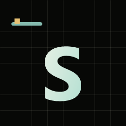
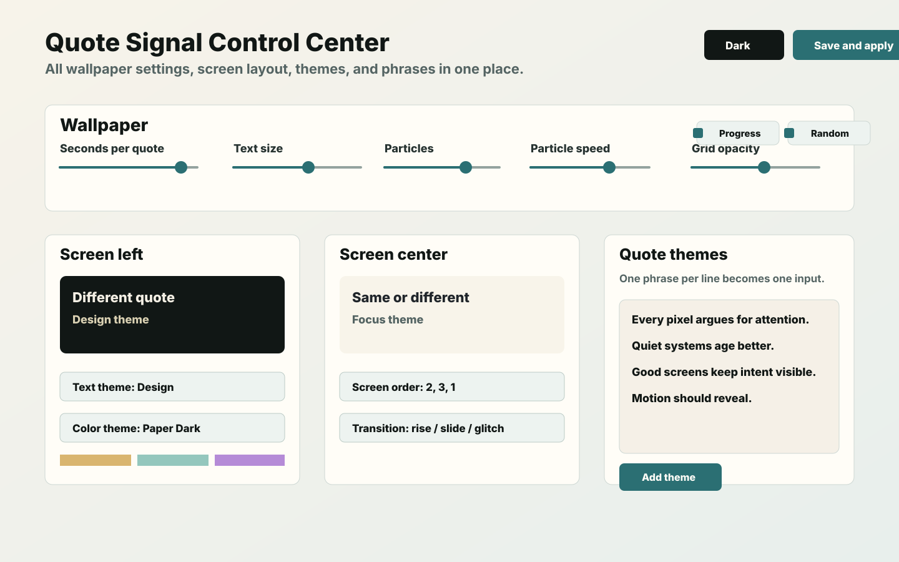

For multi-monitor desks
Assign one message across every screen or give each monitor its own theme, quote pack, color system, and role.

SignalWallTypography-first · Windows · Multi-monitor
Turn every screen into a living thought.
Per-screen quotes, themes, timing, and motion, built for calm multi-monitor desks and shareable as one preset.
Built for intentional desks
SignalWall sits where your attention already goes: the desktop. It is made for Windows users, open-source builders, multi-monitor setups, desk setup creators, designers, founders, students, and anyone who wants quotes to behave like a quiet interface instead of a noisy poster.
Assign one message across every screen or give each monitor its own theme, quote pack, color system, and role.
The source, build scripts, security policy, release notes, and verification workflow are public so the app can be inspected before it runs.
Use design, focus, strategy, motivation, learning, and founder-mode quote themes to keep the desk oriented without adding another feed.
Founding backers
SignalWall exists because real people decided this quiet, open-source desktop system deserves to ship.
The first person to back SignalWall on Kickstarter chose to stay private. Thank you for giving the project its first real vote of confidence.
Live product demo
Change the mode, color, tempo, and transition. This is the same wallpaper engine bundled with SignalWall.
New in v0.3
Open it from the tray. Reorder screens, tune motion, create themes, and import or export complete presets from one place.

A different wallpaper category
Quotes, hierarchy, rhythm, and contrast are the medium, not an overlay on another wallpaper.
Run one thought everywhere or assign each physical display its own quote pack and visual role.
Export quotes, themes, screen order, timing, and motion as one shareable preset.
Particles, grid, progress, and transitions are adjustable or removable.
Proof, not promises
SignalWall publishes the evidence needed to inspect what was built, where it came from, and whether a download changed in transit.
gh attestation verify SignalWallPortable-v0.3.0-win-x64.zip -R Sabertlili/signalwall
Install with eyes open
Windows Smart App Control blocks unsigned desktop apps on strict systems. We do not ask you to disable it. Use the agent-verifiable source workflow today while we pursue free open-source signing through SignPath Foundation.
Give Codex or Claude Code a purpose-built prompt to inspect the repository, review dependencies and workflows, build locally, and report security findings before launch.
Portable package, installer, checksums, SBOM, release manifest, and signed build provenance. Windows binaries remain unsigned.
Read the architecture, security policy, roadmap, CI, CodeQL, and release scripts.
Signal over noise
Quick answers
Most live wallpapers start with video or visual effects. SignalWall starts with text: hierarchy, pacing, themes, and screen-specific meaning.
The code is public and the recommended workflow is source-first: inspect, build locally, verify releases, and avoid disabling Windows protections for an unsigned alpha.
Yes. Add one phrase per line, group phrases by theme, choose same or different quotes across screens, then export the complete setup as a preset.